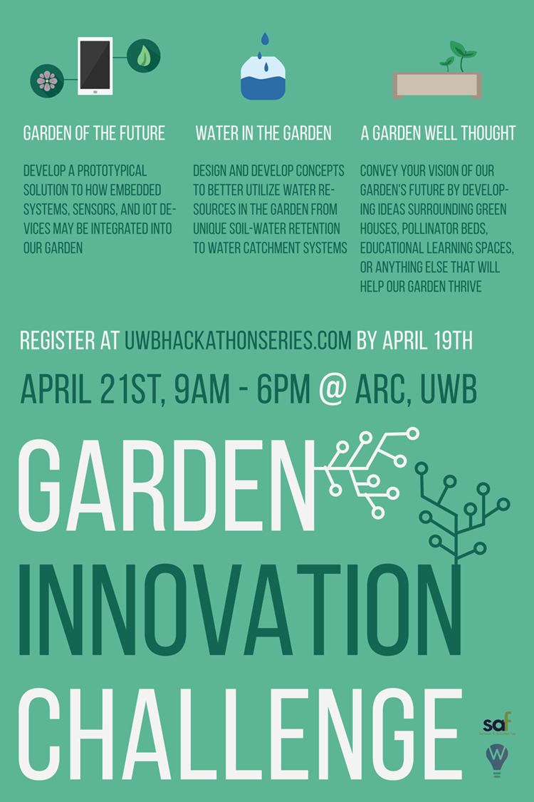
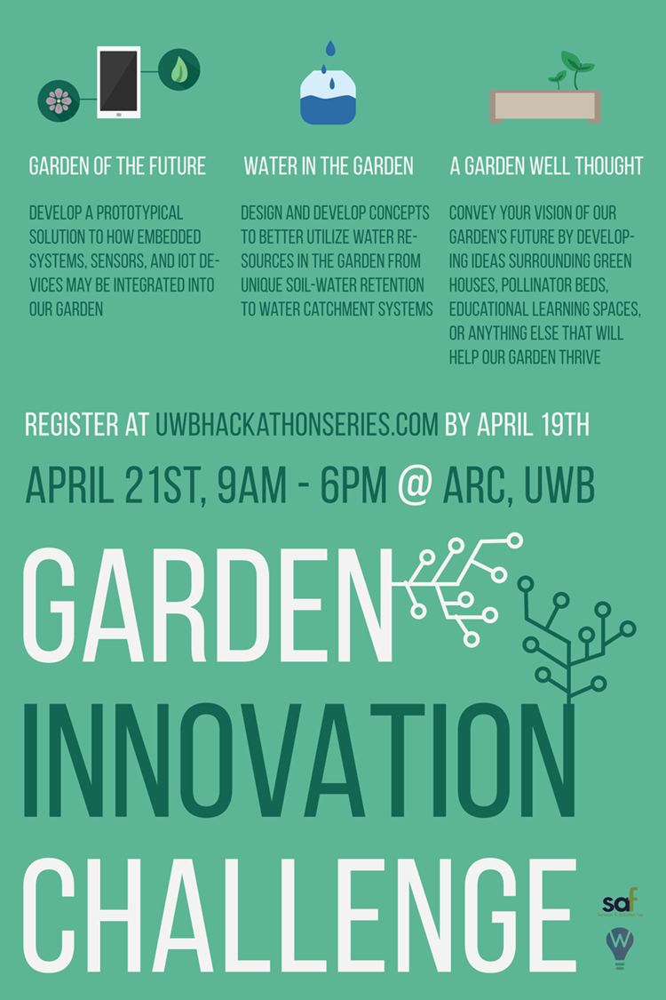
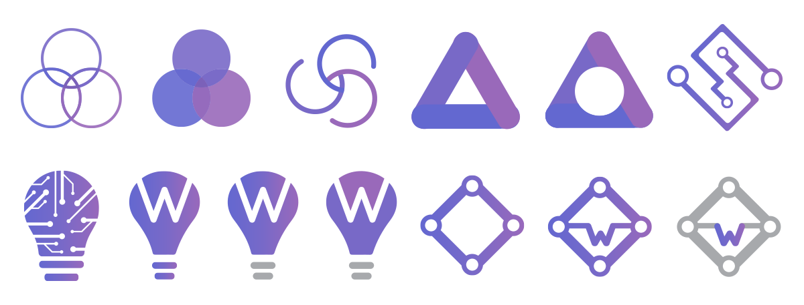

UWBHS Media Designs

 

Logo Design Process
After I wrote down all the ideas and words related to the UWB Hackathon Series, I moved forward to creating drafts of logo ideas related to the words listed above. The most important characteristics of the UWBHS are interdisciplinary, collaboration and innovation.

Color Palette
Instead of using the UW brand colors(Purple and Gold), I decided to take a shift on the UW purple color to create a more modern color theme.

Draft Refinement
The ideas that demonstrated interdisciplinary and innovation were made into a more polished design.
